기계가공조립기능사 (2003-01-26 기출문제)
1과목: 기계가공법 및 안전관리
1. 선반에서 일감이 1회전 하는 동안, 바이트가 이동하는 거리는?
- 절삭량
- 회전수
- 회전량
- 이송량
(정답률: 85%)

2. 광유 또는 혼성유에 비누류를 섞은 것으로 상온에서는 부드러운 반고체 상태이며, 온도가 오르면 녹아서 액체상태로 되는 윤활제는?
- 극압윤활유
- 그리스
- 글리세린
- 스핀들유
(정답률: 62%)
3. 선반에서 사용되는 맨드릴의 종류 중 틀린 것은?
- 팽창식 맨드릴
- 조립식 맨드릴
- 방진구식 맨드릴
- 표준 맨드릴
(정답률: 56%)
4. 밀링에서 날1개당의 이송을 fz = 0.01[㎜], 날수 z = 6, 회전수 n = 500[rpm]일 때, 이송속도 f [㎜/min] 는?
- 3000 ㎜/min
- 1200 ㎜/min
- 120 ㎜/min
- 30 ㎜/min
(정답률: 70%)
5. KS규격에 의한 표준 조도분류의 활동유형에서 일반 휘도 대비 혹은 작은 물체대상 시작업 수행(조도분류G)시 가장 적당한 작업면 조명의 표준 조도 범위[lx]는?
- 30∼60
- 60∼150
- 150∼300
- 300∼600
(정답률: 24%)
6. 다음 중 광학적으로 길이의 미소범위를 확대하여 측정하는 것은?
- 버니어캘리퍼스
- 옵티미터
- 마이크로 인디케이터
- 사인바아
(정답률: 71%)
7. 연삭기에서 숫돌바퀴를 설치할 때의 안전사항으로 올바른 것은?
- 숫돌바퀴는 설치하기 전 음향 검사를 하되, 둔탁한 소리가 나야 한다.
- 플랜지를 조이는 볼트는 시계 방향으로 차례로 세게 조인다.
- 플랜지는 숫돌바퀴 외경의 ⅓ 이상이 되어야 한다.
- 숫돌바퀴의 내경은 축 직경보다 0.3 ㎜ 이상 커야 한다.
(정답률: 41%)
8. KS규격에 의한 안전색채 주황의 표지 의미는?
- 의무적 행동
- 항해,항공의 보안 시설
- 금지
- 위생.구호.보호
(정답률: 49%)
9. 절삭속도 30m/min, 밀링커터날수 10, 지름 150mm, 1날당 이송 0.2mm로 밀링가공할 때, 테이블 이송량은?
- 약 636.9mm/min
- 약 31.8mm/min
- 약 62.8mm/min
- 약 127.3mm/min
(정답률: 36%)
10. 하향 밀링 절삭의 장점이 아닌 것은?
- 가공면이 깨끗해서 다듬질 절삭에 좋다.
- 일감의 고정이 간편하다.
- 날의 마멸이 적고 수명이 길다.
- 백래시가 자연히 제거된다.
(정답률: 84%)
11. 바깥지름의 측정에 사용되는 것은?
- 구멍용 한계게이지
- 사인바
- 축용 한계게이지
- 탄젠트바
(정답률: 55%)
12. 선반 작업시 앵글 플레이트(angle plate)를 사용하여 일감을 고정하는 것은?
- 돌리개(dog)
- 면판(face plate)
- 방진구(work rest)
- 척(chuck)
(정답률: 52%)
13. 기어 세이빙이란 용어 설명으로 적합한 것은?
- 절삭된 기어를 열처리하는 것
- 절삭된 기어를 고정밀도로 다듬는 것
- 기어 절삭 공구를 다듬는 것
- 특수 기어를 가공하는 것
(정답률: 66%)
14. 위트워드 나사의 호칭이 2이며, 1인치당 나사산수 12산 일 때, 나사구멍 드릴의 가장 적당한 지름은?
- 45.6 ㎜
- 48.7 ㎜
- 51.8 ㎜
- 54.3 ㎜
(정답률: 61%)
15. 보기의 ( ) 안에 들어갈 적당한 용어는?
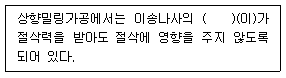
- 프랭크
- 피팅
- 옵셋
- 백래시
(정답률: 85%)
16. 연삭 숫돌의 표시 방법중 WA∙46∙L∙5∙V에서 46은 무엇을 의미하는가?
- 결합제
- 조직
- 결합도
- 입도
(정답률: 77%)
17. 다음 공작기계 중 급속귀환 운동을 하지않는 기계는?
- 세이퍼
- 플레이너
- 밀링
- 슬로터
(정답률: 58%)
18. 드릴이 1회전할 때 이송은 0.2㎜, 회전수는 400rpm, 드릴 끝의 원추높이 4㎜인 드릴로 깊이 15㎜의 구멍을 뚫는데 소요되는 시간은 약 몇 분(min)정도인가?
- 0.75분
- 1.5분
- 2.5분
- 0.24분
(정답률: 22%)
19. 선반, 드릴링 머신, 밀링 머신등의 공작기계를 조합하여 대량 생산에는 적합하지 않으나 소규모의 공장이나 보수 등을 목적으로 하는 공작기계는?
- 범용공작기계
- 단능공작기계
- 전용공작기계
- 만능공작기계
(정답률: 50%)
20. 외측 마이크로미터 또는 실린더 게이지등의 2점 측정기로 얻어지는 읽음의 최대값과 최소값의 차를 구하여 측정하는 진원도 측정법은?
- 반지름법
- 지름법
- 삼점법
- 이침법
(정답률: 35%)
2과목: 기계재료 및 요소
21. 고온 고속 절삭에서 높은 경도를 유지하여 절삭 공구로 뛰어나게 좋은 특징을 가지고 있는 초경 합금의 주요 성분이 아닌 것은?
- 코발트
- 황
- 니켈
- 텅스텐
(정답률: 51%)
22. CNC 선반의 보조기능(miscellaneous function)중 스핀들 정지를 나타낸 것은?
- M02
- M03
- M04
- M⑤
(정답률: 62%)
23. 선삭가공에서 대형 일감을 지지할 때, 사용되는 심압대측 센터 끝의 각도는?
- 60°
- 65°
- 70°
- 90°
(정답률: 44%)
24. 선반의 길이방향 이송핸들에서 리드스크루의 리드는 4㎜이고 이에 연결된 핸들의 눈금이 100등분 되었을 때, 눈금이 25개 움직였다면 왕복대의 이동량은 몇 ㎜인가?
- 0.025
- 0.04
- 0.2
- 1
(정답률: 56%)
25. 선반용 부속품인 돌리개(lathe dog)의 종류가 아닌 것은?
- 곧은 돌리개
- 클램프 돌리개
- 곡형 돌리개
- 팽창식 돌리개
(정답률: 48%)
26. 선반에서 양센터작업으로 가공할 때, 필요없는 것은?
- 주축 센터
- 고정 센터
- 돌리개
- 호브
(정답률: 65%)
27. 선반에서 할수 없는 작업은?
- 드릴링작업(drilling)
- 브로칭작업(broaching)
- 보링작업(boring)
- 나사작업(threading)
(정답률: 70%)
28. 밀링작업에서 할 수 없는 것은?
- 나선 절삭
- 바깥지름 절삭
- 기어 절삭
- 키이홈 절삭
(정답률: 48%)
29. NC 공작기계에서 주소(address)의 기능으로 틀린 것은?
- G : 준비기능
- M : 보조기능
- S : 이송기능
- T : 공구기능
(정답률: 69%)
30. 슈퍼피니싱에서 숫돌의 결합도는 조건에 따라 다르나 일반적으로 경질재료의 범위는?
- G∼J
- K∼N
- O∼R
- S∼V
(정답률: 47%)
31. 나사의 피치가 0.5㎜인 마이크로미터에서 딤블의 원주가 100등분 되었다면 딤블이 1눈금 회전한 경우 스핀들의 이동량(M)은 몇 ㎜인가?
- 0.0⑤
- 0.01
- 0.002
- 0.⑤
(정답률: 71%)
32. 수평 밀링 머신에서 전후 이송을 하는 안내면의 명칭은?
- 컬럼
- 새들
- 니이
- 오버 암
(정답률: 69%)
33. 특수 선반에서 심압대 대신에 많은 절삭공구를 방사 방향으로 설치하여 회전시키며 순서대로 공구를 사용할 수 있도록 한 공구대의 명칭은?
- 심압대(tail stock)
- 에이프런(apron)
- 터릿(turret)
- 새들(saddle)
(정답률: 55%)
34. 고속강도의 에너지로 일감의 국부를 가열, 용융, 증발시키는 가공방법은?
- 플라스마가공
- 화학적가공
- 전자빔가공
- 전해가공
(정답률: 43%)
35. 바깥지름, 안지름, 절단, 나사가공을 모두 할 수 있는 공작기계는?
- 드릴링 머신
- 선반
- 슬로터
- 플레이너
(정답률: 75%)
36. 내열강의 구비 조건으로 틀린 것은?
- 기계적 성질이 우수할 것
- 화학적으로 안정할 것
- 열팽창계수가 클 것
- 조직이 안정할 것
(정답률: 85%)
37. 먼지, 모래 등이 들어가기 쉬운 장소에 사용되는 나사는?
- 너클나사
- 사다리꼴나사
- 톱니나사
- 볼나사
(정답률: 43%)
38. 다음 그림과 같은 와셔의 명칭은? (단, d는 볼트의 지름이다.)
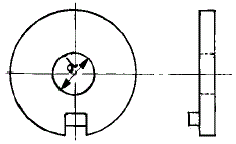
- 혀붙이 와셔
- 클로 와셔
- 스프링 와셔
- 둥근평 와셔
(정답률: 30%)
39. 두축의 중심선을 완전히 일치시키기 어려운 경우 또는 고속 회전으로 진동을 일으키는 경우에 적당한 커플링은?
- 플랜지 커플링
- 플렉시블 커플링
- 울덤 커플링
- 슬리이브 커플링
(정답률: 51%)
40. 하중이 걸리는 속도에 의한 분류중 동하중이 아닌 것은?
- 정하중
- 충격하중
- 반복하중
- 교번하중
(정답률: 45%)
3과목: 기계제도(절삭부분)
41. 웜 기어의 사용목적 중 가장 큰 비중을 차지하는 것은?
- 직선운동을 시키기 위함
- 고속회전을 하기 위함
- 역회전을 시키기 위함
- 큰 감속비를 얻기 위함
(정답률: 61%)
42. 주조성이 우수한 백선 주물을 만들고, 열처리하여 강인한 조직으로 단조를 가능하게 한 주철은?
- 가단 주철
- 칠드 주철
- 구상 흑연 주철
- 보통 주철
(정답률: 56%)
43. 구리계 베어링 합금이 아닌 것은?
- 문쯔 메탈(muntz metal)
- 켈밋(kelmet)
- 연청동(lead bronze)
- 알루미늄 청동
(정답률: 50%)
44. 다음 Ni 합금 중 80% Ni에 20% Cr 이 함유된 합금으로 열전대 재료로 사용되는 것은?
- 인코넬
- 크로멜
- 알루멜
- 엘린바
(정답률: 34%)
45. 기계재료의 단단한 정도를 측정하는 시험법으로 옳은 것은?
- 경도시험
- 수축시험
- 파괴시험
- 굽힘시험
(정답률: 88%)
46. CNC 공작기계의 테이블 이송장치에 사용되는 나사는?
- 볼 나사
- 톱니 나사
- 사각 나사
- 사다리꼴 나사
(정답률: 61%)
47. 탄소강에 어떤 원소가 함유하면 강도, 연신율, 충격치를 감소시키며 적열취성의 원인이 되는가?
- Mn
- Si
- P
- S
(정답률: 48%)
48. 구리의 원자기호와 비중으로 가장 적합한 것은?
- Cu - 8.9
- Ag - 8.9
- Cu - 9.8
- Ag - 9.8
(정답률: 65%)
49. 코일의 평균지름과 소선지름과의 비를 무엇이라 하는가?
- 스프링 상수
- 스프링 지수
- 스프링의 종횡비
- 스프링 피치
(정답률: 40%)
50. 프아송의 비가 0.28일 때 프와송의 수는 얼마인가?
- 2.8
- 3.57
- 4.37
- 5.57
(정답률: 35%)
51. 다음 선의 종류 중에서 특수한 가공을 실시하는 부분을 표시하는 선은?
- 굵은 실선
- 굵은 1점 쇄선
- 가는 실선
- 가는 1점 쇄선
(정답률: 73%)
52. 평화면에 수직으로 놓인 직선의 투상 설명으로 올바른 것은?
- 입화면에서 점으로 나타난다.
- 입화면에서 축소된 길이로 나타난다.
- 입화면에서 실제의 길이로 나타난다.
- 평화면에 실제의 길이로 나타난다.
(정답률: 46%)
53. 보기와 같은 구멍과 축이 조립상태에 있을 때 치수 기입상태을 올바르게 설명된 것은?
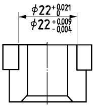
- 구멍의 치수는
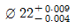
- 구멍의 치수는
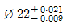
- 축의 치수는
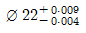
- 축의 치수는
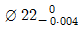
(정답률: 50%)
54. 다음과 같은 표면의 결 도시기호 설명 중 올바른 것은?
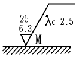
- M : 밀링가공에 의한 절삭
- 6.3 : 최대높이 6.3μm 거칠기 값
- 25 : 10점 평균 거칠기의 상한 값
- λc 2.5 : 커트 오프값 2.5mm
(정답률: 36%)
55. 다음 그림 중 스프링 와셔는 어느 것인가?
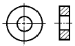
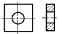
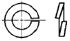
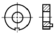
(정답률: 61%)
56. 보기 입체도의 정면도로 가장 적합한 것은?
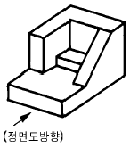
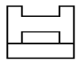
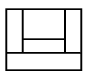
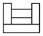
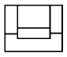
(정답률: 83%)
57. 보기 입체도의 화살표 방향 투상도로 가장 적합한 것은?
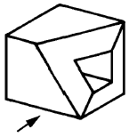
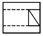
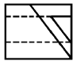
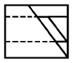
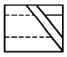
(정답률: 66%)
58. 원기둥의 한쪽부분만 중심축에서 45° 로 모따기한 보기와 같은 좌측면도에 가장 적합한 정면도는?
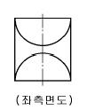
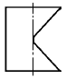
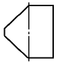
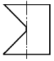
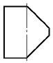
(정답률: 47%)
59. 치수가 50H7p6라 할 때의 설명으로 가장 올바른 것은?
- 구멍기준식 헐거운 끼워맞춤
- 축기준식 중간 끼워맞춤
- 구멍기준식 억지 끼워맞춤
- 축 기준식 억지 끼워맞춤
(정답률: 44%)
60. 기하공차의 정의와 도시에서 데이텀의 표적기호가 점일 때의 것은?
- ▨
- ⊙
- Ｘ
- ●
(정답률: 32%)
선반에서 일감이 1회전하는 동안 바이트가 이동하는 거리는 이송량이기 때문입니다. 이송량은 바이트가 일감의 지름을 따라 이동하는 거리를 의미합니다. 따라서 회전수나 회전량, 절삭량과는 다른 개념입니다.